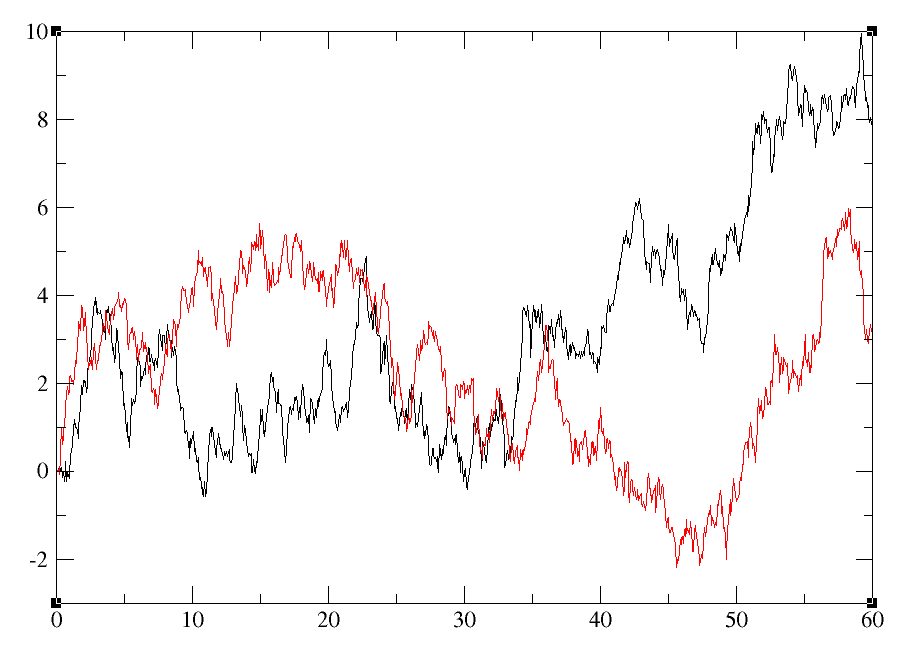
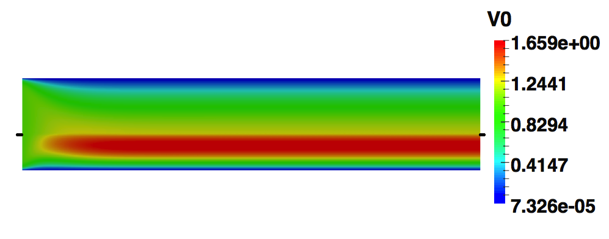
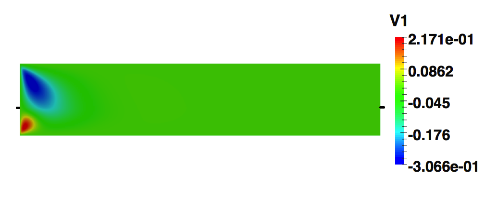

Hammou El-Otmany
Scientist researcher at the University of Pau
Teachning Assistant & Former at ETUD'+


-
Welcome to my website!
I am an associate research scientist at Laboratory of Mathematics and its Applications of Pau(LMAP), Univeristy of Pau. I am in charge of collaborative research projects with Tarik Kousksou ( tarik.kousksou@univ-pau.fr), Youssef Zeraouli ( youssef.zeraouli@univ-pau.fr) and Tarik El Rhafiki( t.elrhafiki@gmail.com). I mainly work on mathematical modelling, simulation & optimisation.
I defended my PhD thesis in november 2015 at University of Pau, under the supervision of Daniela Capatina (Associate Professor - HDR, LMAP-University of Pau, daniela.capatina@univ-pau.fr) and Didier Greabling (Professor, IPREM - Univeristy of Pau, didier.graebling@univ-pau.fr ). The other members of my thesis committee were Robert EYMARD (University of Marne-la-Vallée), Patrick HILD (University Paul-Sabatier Toulouse), Adel BLOUZA (University of Lyon) and Robert LUCE (University of Pau). The title of My PhD thesis was: "Approximation by NXFEM method of interphase and interface problems in fluid mechanics".
Research Interests:- Numerical analysis and simulation
- Inverse problem with deterministic and stochastic methods
- Stochastic modelling and simulaion for PDEs
- Geophysics (seismic tomography), Oil (reservoir connectivity)
- Dispersed media (calorific capacity, MCP), Fluid mechanics and rheology (red blood cells)
This is my professional website, which I use to record and share my research, teaching interests and experience. Do not hesitate to contact me with research and collaboration ideas. I look forward to hearing from you.- personal email: elotmany.hammou@gmail.com
- professional email: hammou.elotmany@univ-pau.fr



{kind=link}